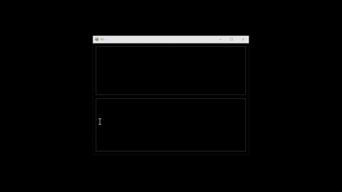

Description:
Virtual keyboard assist
A-Z
0-9
Insert
Space
Tab
Right Ctrl: « (SettingBracketKey)
Scroll: Repeat (SettingRepeatKey)
Basic examples: (modes)
* Bracket mode with auto backspace: Press Tab in the text box to auto print «», type test-, press right, type Hi!,
and press Ctrl + S to save to the list box. After the code is saved to the list box, press Right Ctrl (RCtrl), release,
then type test for output: Hi!
⚠ After pressing RCtrl, title bar text will show « symbol. Now type test to run the code.
PD > «test (this is your PD > input). Minus sign means auto backspace text between « and - characters.
«test-»Hi!
* Non bracket mode: Save code below to the list box then type welc somewhere to output ome (SettingCodeLength: 4)
welcome«:{left 2}+{left 2}»
- RCtrl, W (Bracket mode)
«w»elcome«left*2»«shift»«left*2»«-shift»
- With white space
«w»elcome‹
«left*2»
«shift»
«left*2»
«-shift»
›
* Bracket mode: Save code below to the list box then press RCtrl then type t1 to output Goodbye
«t1»Goodbye
* Open Close Bracket mode scan: Save code below to the list box then press RCtrl type pd
then press RCtrl quickly to output Hello out there in TV land. (SettingOpenCloseBracketModeScan must be set to True)
⚠ SettingOpenCloseBracketModeScan must be set to True
⚠ Not recommended if SettingBracketKey is set to RCtrl but will work if press quickly (change SettingBracketKey to something other than a shift or ctrl key. ex. F4)
«pd-»Hello out there in TV land.
* Connect Mode: Save code below to the list box then press RCtrl then type t2 for output
«t2»«t1»«ctrl»a«-ctrl»«'print goodbye and select all»
* Administrator mode:
pd.exe: Properties > Compatibility > Run this program as an administrator
pd.appx: Right click > Run as administrator
Escape: Stop
H + Escape: Toggle visibility
X + Escape: Get «xy:» (clipboard)
Double click: Toggle (if SettingBackgroundImage has value)
Ctrl + Dbl click: Center
Scroll Lock: Test selected text, text box text, or repeat
⚠ Scroll lock caution:
Unlock loop: Press Scroll Lock again or Escape + Scroll Lock (ex. «v-»🗽)
Delete: Remove item
Ctrl + E: Edit
Ctrl + X: Cut and copy selected item to clipboard
Ctrl + C: Copy
Ctrl + V: Add clipboard
Ctrl + S: Save
Ctrl + E: Edit
Ctrl + U: Update
Ctrl + F: Find
Ctrl + Z: Undo
Ctrl + Y: Redo
Ctrl + Tab: List focus
Double click | Tab: Print «»
Dbl click if empty: Print PD > input
F4: Clear
F5: Test selected text or full text
Toggle on/off: ' (Single quote, Backspace)
Right click: Toggle select
«code» Auto complete: Tab, C (First or first and second letter), Tab
«'comments»
«time» Copy current time to clipboard
«Time» Print current time
«time:» Replace : with value ex. «time:\»
«date» Copy current date to clipboard
«Date» Print current date
«date:» Replace forward slashes with value ex. «date:-»
«:» Sendkeys. Example: «:test+{left 4}»
«<<» Print open code bracket (SettingBracketOpen)
«>>» Print close bracket
«iw»«-iw» Ignore white space («iw + Tab»)
«ws + Tab» Ignore white space
«cb:» Copy clipboard value. ex. «cb:test»
«sleep:» Pause program x ms, Esc to stop ex. «sleep:1000» (sleep 1 second)
«Sleep:» Pause program x milliseconds
«,» Sleep 77ms or «,:» ex. «,:1777»
«minute:» Pause program x minutes, Esc to stop
«to:» Timeout ex. «to:1000» Timeout 1 second, press Escape to stop
«app:» App activate. ex. «app:PD» (15 second offset) Escape to stop
«App:» App activate
«win»«-win» Auto complete: «w + Tab»
«wr + Tab» Run template ex. «win»r«-win»«app:run»cmd«enter»
«se + Tab» Open AppData (pd.exe settings)
«shift»«-shift» (press shift, release ex. «shift»«up»«-shift»)
«alt»«-alt»
«ctrl»«-ctrl»
«up»
«right»
«down»
«left»
«tab»
«space»
«enter»
«menu»
«bs» or «backspace»
«esc» or «escape»
«home»
«end»
«pu» page up
«pd» page down
«insert»
«delete»
«f1» F1-F12 ex. «f4»
«n0» Number Pad 0-9 ex. «n3»
«pause» or «break»
«ps» or «printscreen»
«nl» Number lock
«sl» Scroll lock
«MediaStop»
«MediaPlayPause»
«MediaNextTrack»
«MediaPreviousTrack»
«SelectMedia»
«vu» volume up
«vd» volume down
«vm» volume mute
«lb» Left button
«rb» Right button
«mb» Middle button
«lc» Left click
«lh» Left hold
«lr» Left release
«mc» Middle click
«mh» Middle hold
«mr» Middle release
«rc» Right click
«rh» Right hold
«rr» Right release
«rp» Return pointer or «rm»
«xy» Get pointer x y ( «xy + Tab» ) ex. «xy:0,0»
«x:» Move pointer x ex. «x:100» (right 100px)
«y:» Move pointer y ex. «y:-100»
«audio:» Play .wav file ex. «audio:C:\Users\..\sound.wav»
«Audio:» Play .wav and wait to complete
«stop-audio»
«yesno:» Verify ex. «yesno:Continue?»
«replace:that|this» Edit clipboard value
Edit user.config to customize:
First exit program, open and edit user.config, save, then reopen program
pd.exe user.config location:
C:\Users\..\AppData\Local\pd\..\1.3\user.config
pd.appx user.config location:
C:\Users\..\AppData\Local\Packages\pd-_..\LocalCache\Local\pd\pd.exe_Url_..\1.3\user.config
Reset:
Close program, delete pd folder or user.config, then reopen program
(Customize)
SettingClickItemToRun
False
Show program title text: `PD > input`
SettingTitleTip
True
If set to false `PD > input` will scan both bracket mode: `PD > «good` and non bracket mode: `PD > good`.
If set to true ignore `PD > good` and only scan `PD > «customshortcut`
SettingBracketModeOnlyScan
False
Adjust this value below if using mode two from above `welc` and would like more input values like `welco` (5)
SettingCodeLength
3
If set to true all bracket codes are ignored. True example: PD > good{bs 4}Legacy mode here | «good»{bs 4}Legacy code here only
SettingSendkeysOnlyMode
False
Right Ctrl key: «
SettingBracketKey
RControlKey (List)
SettingRepeatKey
Scroll (scroll lock key)
SettingOpenCloseBracketModeScan
False (if set to True, press Rctrl, type the «code», now press Rctrl to scan/run)
SettingBracketOpen
«
SettingBracketClose
»
SettingIgnoreWhiteSpaceOpen
‹
SettingIgnoreWhiteSpaceClose
›
SettingInsertSymbol
į
SettingBackgroundImage
<value>C:\Users\..\..\.jpg</value>
SettingIcon
<value>C:\Users\..\..\.ico</value>
SettingTitleText
<value>PD</value>
(Frequency)
SettingInterval
150
SettingInfiniteLoop
False
(Interface)
SettingDarkMode
True
SettingDarkModeText
Lime
SettingTopMost
False
SettingWordWrap
True
(1 for no opacity)
SettingOpacity
0.9
(Auto saved values when closed)
SettingHeight
268
SettingWidth
300
SettingLocationTop
118
SettingLocationLeft
78
SettingTextBox
Text
SettingListboxSelectedIndex
-1
SettingTabIndex
0
SettingSelectionStart
0
SettingSelectionLength
0
SettingTextBoxZoomFactor
1
SettingListBoxFontSize
8.25
SettingSplitterDistance
95
SettingSplitterWidth
15